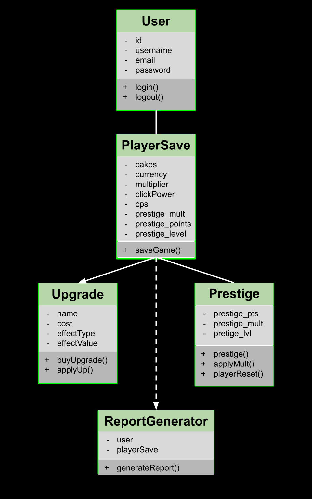
Design
Class Diagram
Main classes and relationships: User, PlayerSave, Upgrade, Prestige.
Featured Project
A browser-based idle clicker game with persistent saves, upgrades, prestige, and a leaderboard.
I built a complete web game that demonstrates application design, persistence, and testing, while also being fun and engaging to play. The goal was to create an idle clicker with meaningful progression, account-based saves, and production deployment.
I designed and built a PHP + JavaScript web application with SQLite for persistent player saves. Players can create accounts, bake cakes by clicking, purchase upgrades, reset via prestige for permanent bonuses, view a leaderboard, and generate player reports. The app is containerized with Docker and deployed on Render.
I designed the application architecture and class structure, implemented the game logic and UI, created the database schema, wrote functional unit tests, and configured Docker and Render deployment. I also produced the full documentation and user guides.
This class diagram demonstrates the structure and relationships of the main components in Cake Idle Clicker, built using JavaScript. Although JavaScript uses prototypes for inheritance, this class diagram still serves as a useful reference for the main structure of the classes.
The application is designed for persistent gameplay through logged-in accounts. The main classes include User, PlayerSave, Upgrade, and Prestige. Users can upgrade for efficiency, save their progress, and reset via prestige to earn permanent rewards. Optionally, players can generate reports based on their saved game data.
Overall, this class diagram presents a clear overview of the Cake Idle Clicker system by showcasing the major classes, responsibilities, and relationships between them, and highlights how the system works together in an easy-to-understand format.

Design
Main classes and relationships: User, PlayerSave, Upgrade, Prestige.
The UI provides a casual, easy-to-use interface that helps players quickly learn the game mechanics. The experience begins on the home page, where users see a preview of the game and a visual cue pointing to the log in or register button, indicating that an account is required before they can play.
After logging in, users are redirected back to the home page, where they can begin a
new game or resume their saved progress. The main component focuses on clicking to
“bake” cakes, while also giving players access to upgrades and permanent rewards via
prestige in a clear and organized layout that supports progression.
Key views of the application UI.
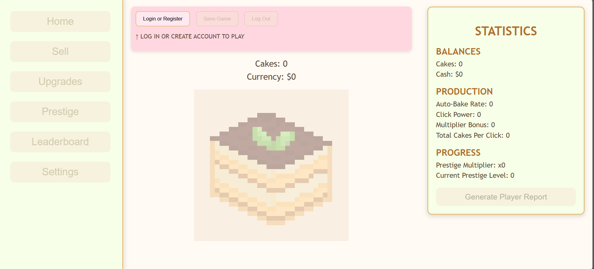
Public
Preview of the game with login/register prompt.
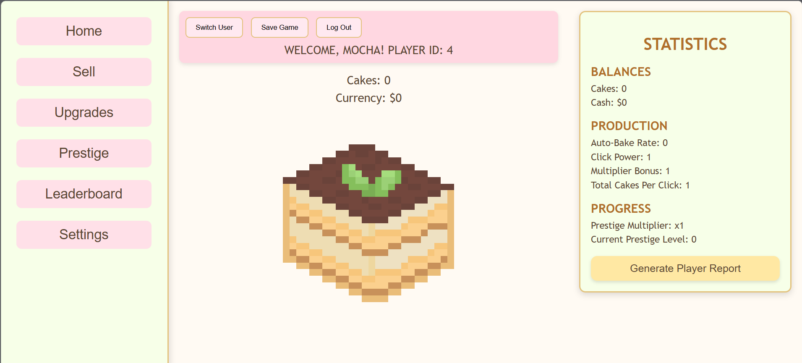
Game
Main clicker interface with cake, stats, and navigation.
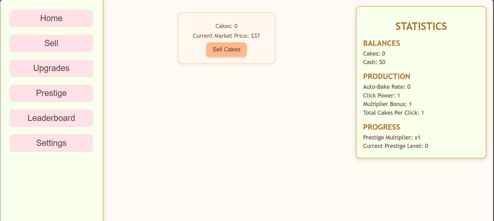
Game
Exchange cakes for currency.
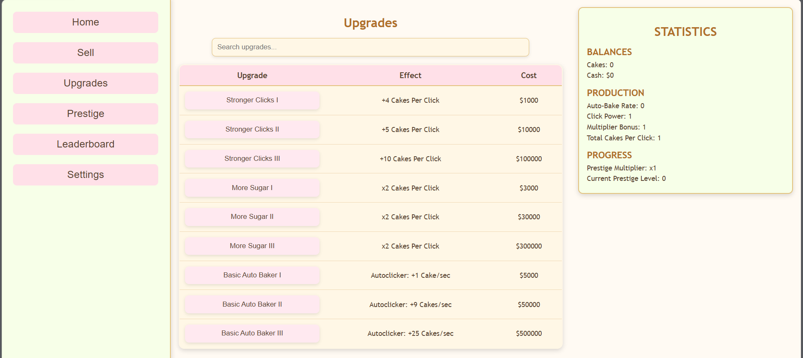
Game
Purchase upgrades with search functionality.
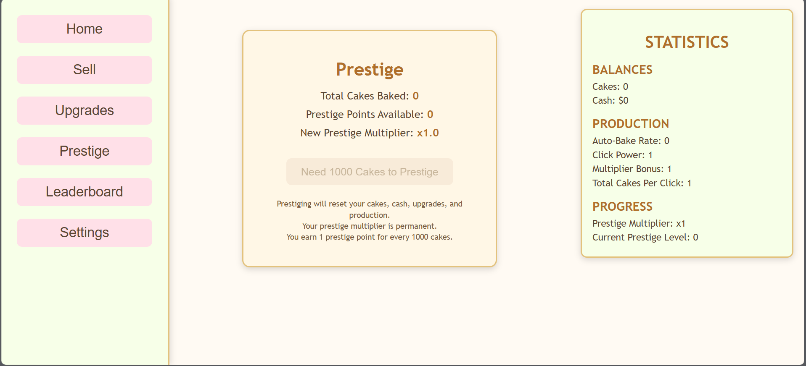
Game
Prestige system for resetting progress in exchange for permanent bonuses.
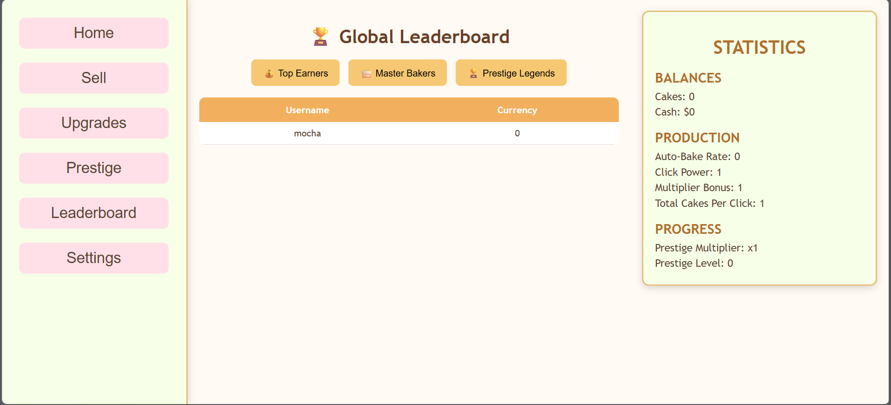
Game
Top‑10 players across multiple categories.
The purpose of the unit test plan is to ensure the correctness and reliability of the Cake Idle Clicker web application. Functional unit testing was used to verify that each component performs its intended task, enabling the identification of component-specific defects before they impact the rest of the application.
Functional unit testing was used to verify that specific core components and functions behave correctly. The first test focused on inserting data into the database to ensure that all related player data was correctly stored, and then deleting that data along with all associated records. This is important for testing the delete account feature. Another test ensured that the clicker function works by verifying that the cake count increases as expected and that the display is updated accordingly.
When a test failed during the testing process, the following strategies were applied:
Screenshots of the test code used for functional unit testing.
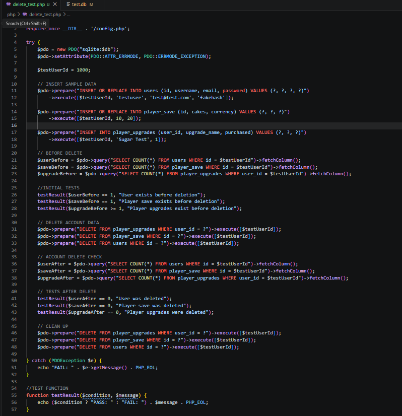
Testing
PHP test script validating database insert and delete operations.
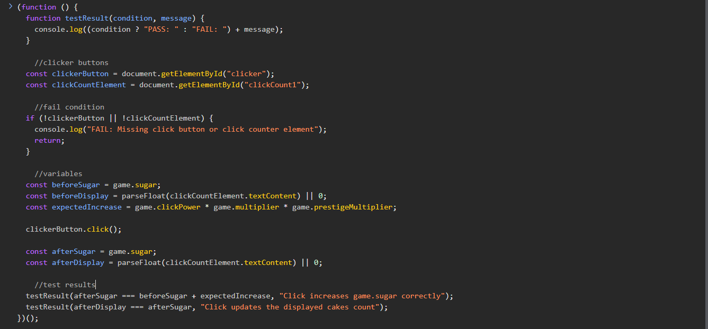
Testing
JavaScript tests verifying click events and UI updates.
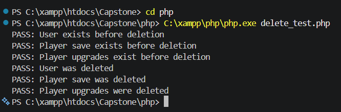
Results
Insert and delete user data operations passing.
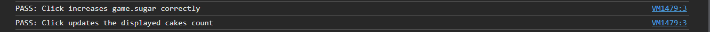
Results
Clicker event and UI update operations passing.
I selected Render as my cloud hosting provider because it offers a variety of features that align well with my web application’s needs. Render provides ease of deployment, allowing me to quickly move the application from development to production without complex setup. Its free hosting tier is sufficient for a student project, with paid options available for persistent disk features as the application scales.
Render integrates seamlessly with GitHub, allowing me to connect my repository directly and deploy the application with minimal configuration. This integration also supports automatic redeployment whenever updates are pushed to the repository, ensuring the live application stays up to date. In addition, Render is compatible with SQLite, which is used for my database, making deployment straightforward without requiring database migration or additional configurations.
I chose to use Docker containers in my deployment because they provide a consistent environment for my application. Render natively supports Docker-based deployments, and Docker allows me to replicate the same environment for both local development and production, reducing the risk of compatibility issues.
To meet the requirements of my PHP-based application, I used the official PHP 8.3 CLI image as the base and set the working directory to `/app`. I installed the necessary dependencies, such as SQLite and required PHP extensions, to support my database functionality. I also implemented a `.dockerignore` file to exclude unnecessary files from the container image, improving image size and build efficiency. After configuring the Dockerfile, I built the container image using the terminal, allowing Render to deploy the application in a fully configured and consistent environment.
Step-by-step instructions for creating an account and using core features.
Want to try the game yourself?